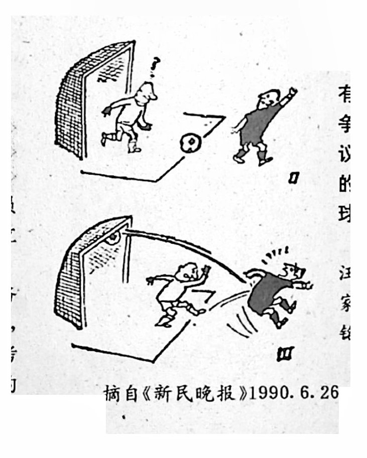

汪家铭 《人事》1990年第7期（总第58期），第40页（原载《新民晚报》）
有争议的球
A Disputed Goal
- Description
- Two panels at the goalmouth: a striker raises his arm to appeal as the ball rolls toward the net; then the ball is in, the goalkeeper scrambles, and the striker goes tumbling backward.
- Note
- A sports cartoon reprinted from the Xinmin Evening News during the 1990 World Cup.
- Artist
- Wang Jiaming 汪家铭
- Reprinted from
- 《新民晚报》 — Xinmin wanbao (Xinmin Evening News)
- Published in
- 《人事》1990年第7期（总第58期）, p. 40
- Themes
- Everyday life (not about personnel work)

Cite
Wang Jiaming, “有争议的球” [A Disputed Goal], Renshi (Personnel) 《人事》, 1990, no. 7, p. 40.